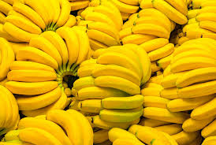
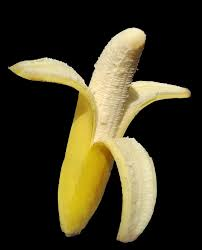

香蕉
果實長有棱；果皮黃色或綠色，果肉白色，味道香甜。
主要生長於熱帶、亞熱帶地區。原產於亞洲東南部熱帶、亞熱帶地區。

歷史
一般相信，東南亞的農民最早種植小果野蕉（M. acuminata），並將其傳播到東南亞西北部，與原生於印度東部到華南一帶的野蕉（M. balbisiana）發生雜交，形成香蕉這一雜交種，再被人們引種到世界各地，形成現代多種人工栽培品系
考古學家曾於今日巴布亞紐幾內亞境內發現香蕉種植遺址，距今有逾五千年歷史，
在大航海時代，葡萄牙人於西非把香蕉帶到美洲一帶種植，時為十六世紀。在二十世紀很長時間，中美洲和南美洲一帶，是世界最主要香蕉種植國，出口至歐洲以及北美。

臺灣香蕉栽植
香蕉在外銷上曾經替台灣賺取了大量外匯，讓台灣擁有「香蕉王國」的美譽。 台灣的香蕉主要產地在高雄市的旗山區、那瑪夏區、內門區；台南市的山上區、屏東縣和台東縣，以及農民自己種植
資料來源: